우리 한글날에 어울리는 문화 콘텐츠를 찾아보세요!
산업계의 다양한 분야에서 자유롭게 편집 및 수정이 가능한 디자인 소스를 제공하고 있습니다
떡살(1003723)
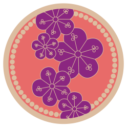
반닫이 백동장석(1003722)
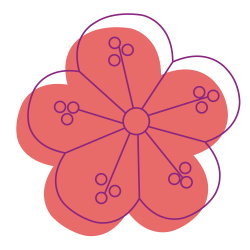
반닫이 백동장석(1003721)
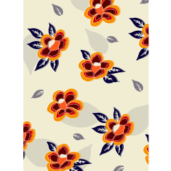
보자기(1003720)
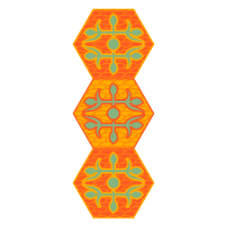
창경궁 영춘헌 암막새(1003719)
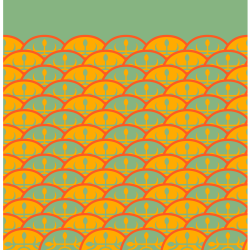
창경궁 영춘헌 암막새(1003718)
창경궁 영춘헌 암막새(1003717)
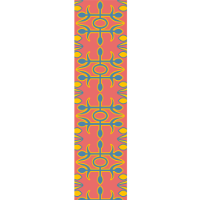
창경궁 영춘헌 암막새(1003716)
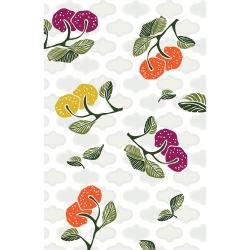
베갯모(1003715)
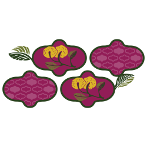
베갯모(1003714)
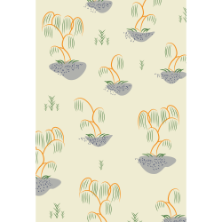
분청사기버드나무모란문병(1003713)
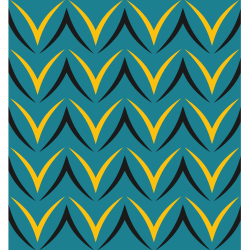
분청사기버드나무모란문병(1003712)
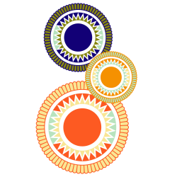
빗접(1003711)
빗접(1003710)
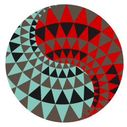
빗접(1003709)
빗접(1003708)
빗접(1003707)
빗접(1003706)
빗접(1003705)
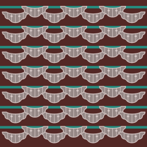
두룡포 기사비 비각 암막새(1003704)
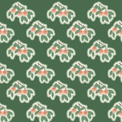
상원사 문수전 포벽(1003703)
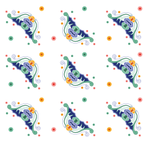
만기사 대웅전 편액(1003702)
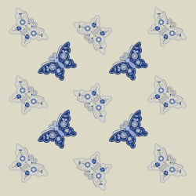
노리개(1003701)
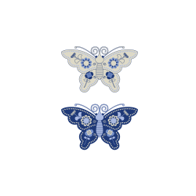
노리개(1003700)
관련기관 안내
외 ()건신청이 완료되었습니다. 다운로드가 진행됩니다.
신청하신 문양 조회는 마이페이지 > 전통문양신청에서 확인 가능합니다.